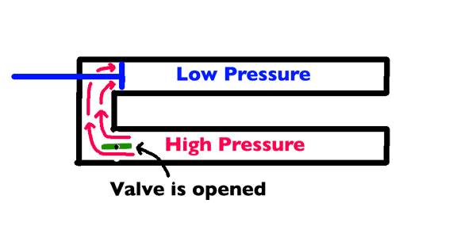
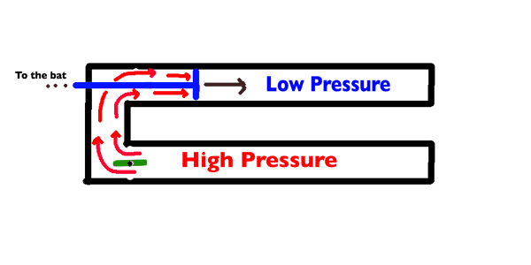

-
Basic Explaination
Out of everything that I have done, this project in
my favorite. It combines many of my favorite
subjects including: engineering, physics, welding,
computer programming, and data analysis. Though, it
did not meet the expectations I calculated, it still
was a fun idea that I put together.
This project works off of the power of pressure and
a lot of PVC. In one pipe (called the vacuum pipe),
we have a piston with a rod that extends out the
back and connects to the bat. We also remove all the
air out of this pipe to reduce excess forces that
would be exerted against the piston. In the second
pipe, we pump up the pressure very high. Connecting
these two pipes is a valve which holds back this
high pressure until ready to fire.
-
When the pressure in the vacuum pipe is very low and
the pressure in the pressure pipe is very high, the
valve opens dumping all the pressure behind the
piston.
-

-
This large amount of pressure behind the piston puts
thousands of pounds of force on the piston pushing it
down the vacuum pipe. Because the piston is connected
to the bat via the rod out the back, the bat is
rotated very quickly contacting the ball.
-

-
Because this force level is very high, it can break
the structure the bat is supported on. This is what
happened to the axle that supported the bat.
-